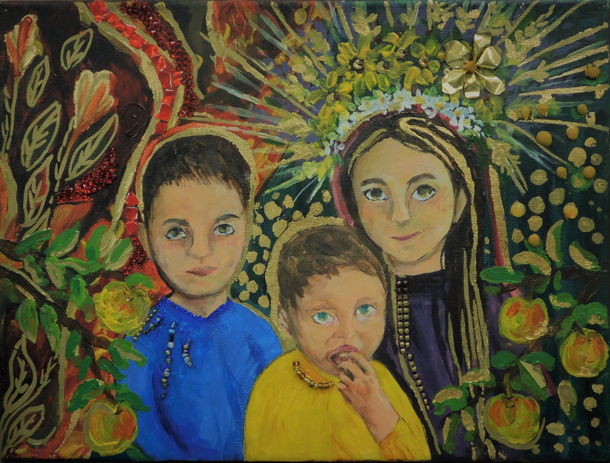
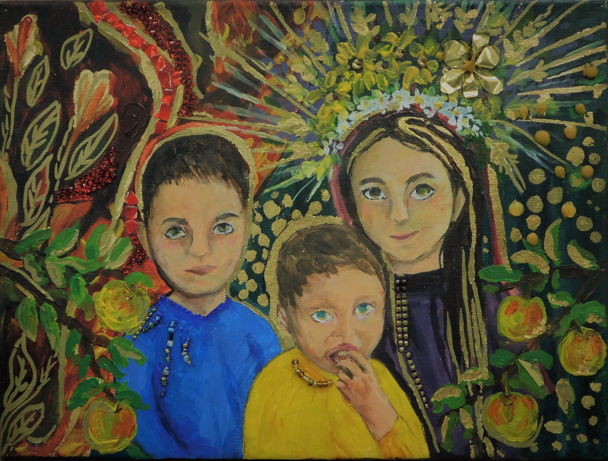
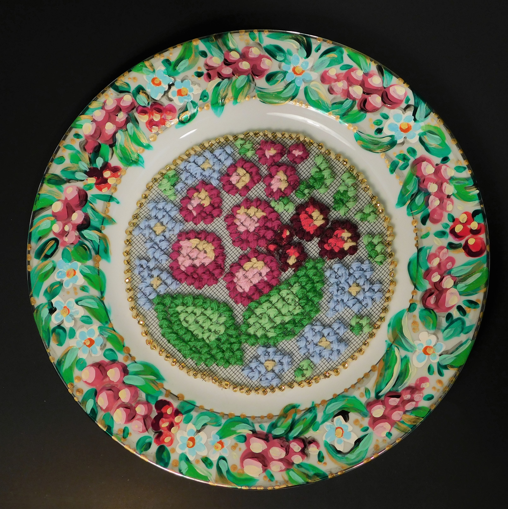
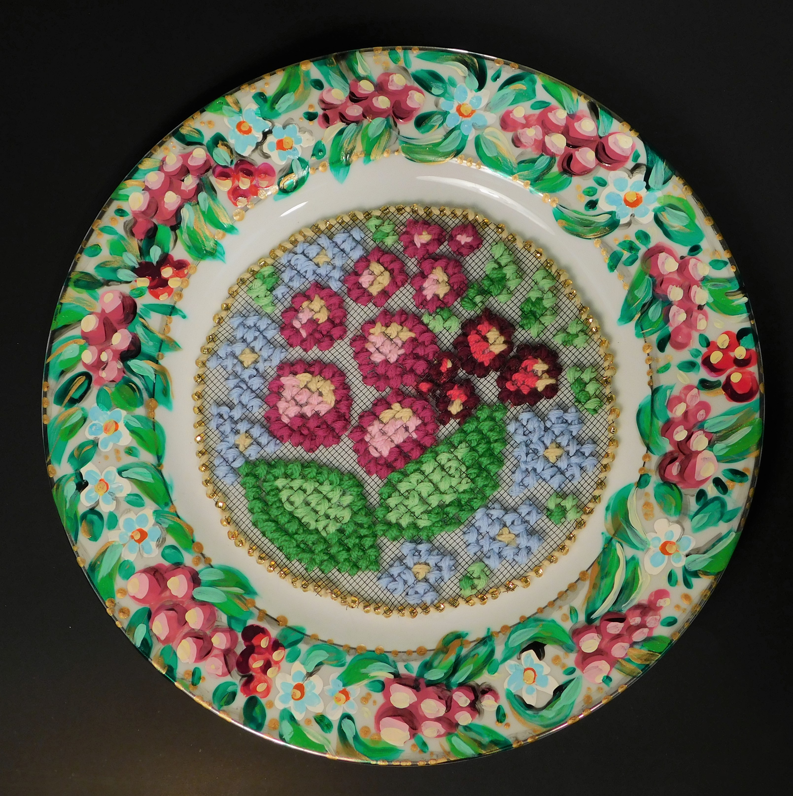

Вишенька or Cherry in its English translation was made in a couple weeks of continuous work and contains approximately 1090 frames in total. It’s a simple story of quaint family life with two children asking their mother to make them a pie and she does. Like most of the animations I have worked on so far it has intention to give you a warm and fuzzy feeling in your stomach, to entertain and to make you smile. This is also true for the other two gif animations displayed below. SEARCH and I Hate Flying are two short Video pieces made from videos collected and shot over the span of at least a year in various locations. But mostly airports and while travelling. This is reflected in the contents of the pieces. Although they are abstract, and I would like people to interpret them as they would some of the main themes in these pieces are travel, longing, and wanderlust.
Some other things on this page include some of my photography and multimedia work. Feel free to scroll down and check it out
 


 
